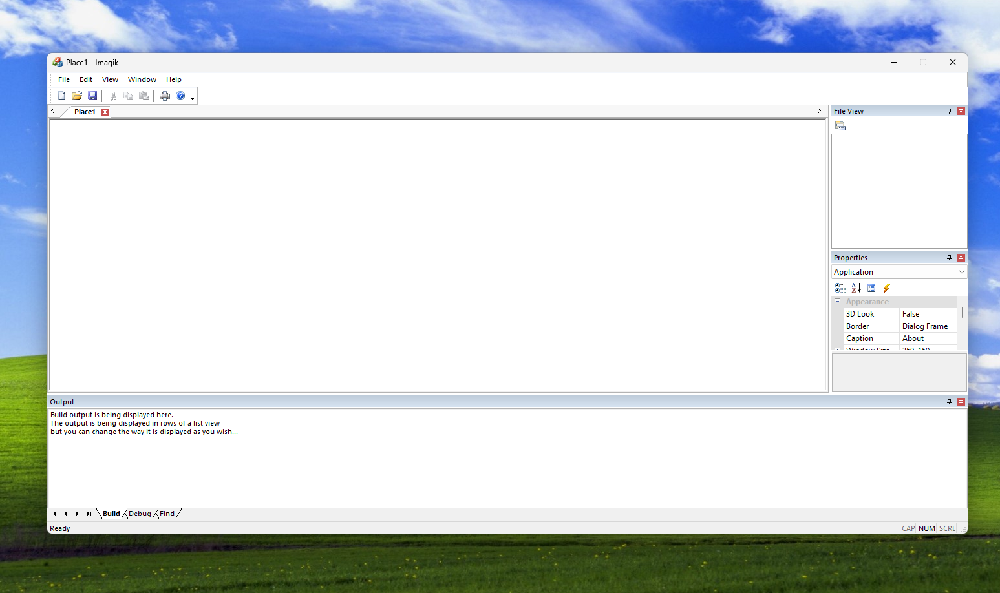
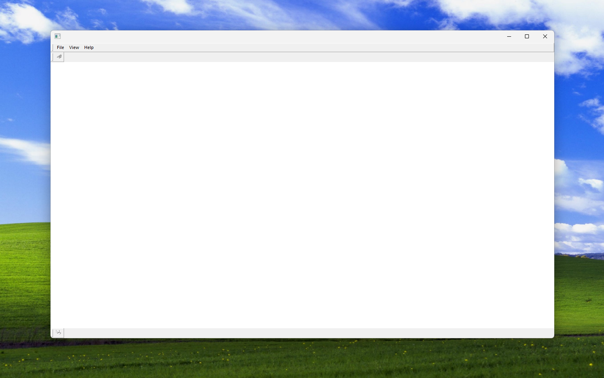

This is the official imagik™ blog! It is mostly used for
development updates. You can find the creator's social medias
below.
Entries are listed from newest (top) to oldest (bottom).
Havoc Crenshaw · YouTube
More to come...
"Of course..." · August 9, 2025 7:24 PM
So, I got some work done. And then, I started to realize that like... I might
be in over my head trying to do the UI from scratch, especially with how hard it is to
really get any info on what you're doing. So, I decided to bite the bullet and just do it
like everyone else and use the MFC app wizard. Yes, so sad.
I guess, in the end it'll be fine, just a lot of clean up work out of the gate and then
it probably would end up faster than if I didn't use the app wizard. A lot faster.
Anywho, today was just a lot of working on getting some of the UI for the previous "attempt"
done, and then flushing it down to replace it with the MFC app wizard. Oh well, it'll end
up being fine. Again, probably faster in the end.
Image follows, the result of today. Tommorow I will clean up what I haven't already, and
get it all ready to BIND LUA!!!
Ciao!

- Havoc Crenshaw
"A day's work" · August 8, 2025 11:21 PM
So, what was the first day of actually producing like?
...
Unfun.
It felt great, to be honest, to be actually getting started on finally actually
programming, yet, MFC sucks!!!
Gotta love using a 30 year old API that hasn't really gotten any further than well,
30 years ago. What makes it so bad is not the API itself, because I actually quite
enjoy it. Makes Windows programming fairly straight forward outside of the occasional
questionable design choice and the fact that some of it feels half baked.
No, what I don't like about it, is how impossible it is to actually learn to use. Yes,
there's a beautiful book by Jeff Prosise, "Programming Windows with MFC, Second Edition,"
but for anything half modern you have to use parts of MFC that NOBODY IN THE WORLD seems
to have ever discussed in any sort of decent capacity! You can't actually learn it!
Not without pain, you're not.
Fortunately, this chapter will have its complications only for a brief stint. Then,
hopefully, the rest will be relatively straightforward, but if MFC, in all it's 30 year
glory and all the time and people in the world to make it digestible, doesn't have a
decent modern resource? Well, I'm REALLY looking forward to obscure APIs like Sol2.
Anywho, anywho. Decent first day, to be honest. An image follows, the work done today.
Not too much, but respectable I think, with the pain I had to go through trying to get
it working. Ugh.
Ciao!

- Havoc Crenshaw
"On The Road" · August 7, 2025 7:46 PM
Production has begun.
Yes, I haven't been actually producing any real code! But, now I have.
A lot of the early work (especially inbetween now and the last post)
has been spent purely on research and getting ready. And, regretably,
a lot of figuring out.
I'm not going to lie. This is legitimately my first ever serious
project. And as such, there's a lot here that's brand new to me.
I never really into programming, never really was into actually
producing. But as I saw what was happening with my to be competitor,
I couldn't sit by. I had to do something.
I believe in "you should focus on what you can control."
This was something I could control.
Because I knew at least somewhat how to program, I knew I could put
the effort in and MAKE something. Make it better. Make it fun again.
So yeah, the production has begun. The basic UI, I estimate, will not
take too long to make. Maybe a month, absolute max. (absolute)
Looking forward to being a bit more active here as we get more interesting
things happening!
Ciao!
"Welcome to the blog!" · July 27, 2025 3:42 AM
Am I supposed to be up right now? Definitely not!
I am, actually pretty tired. But I'm working on this pretty
big update for the website. Just gonna finish this out.
So welcome to the blog! Or rather, say hello to the first
entry! Mostly the point of this blog is to just to communicate
a bit on what we're doing behind the scenes and how
development is going. (And also future archiving.)
So what is the point of all this? Why am I making imagik?
Simply put, I'm tired of big corporations ruining themselves
and their product. With imagik, I want to bring back what
made a certain "red R corporation" as we'll call it for now
so amazing when it first came out, and when it skyrocketed in
popularity in the mid 2010s.
We're aiming to release with roughly the same features it had
on release, just modernized of course. Nobody wants to
experience the bad of the 2000s, either, so we'll make sure
to keep our game engine crispy, and somewhat okay looking!
I think this is an okay opening to the Blog, so I'll leave it
here for now and finish up the rest of the website, but I'm
super looking forward to improving the website more and more
(as I learn HTML, and CSS), talking on the Blog, working on the
engine, and all that.
P.S. Yes, I am archiving my own website. A) I believe in
internet archival. B) It'd be cool to look back on the
earliest iterations of my website if this project goes
anywhere (not to be cocky, but I'm confident.)